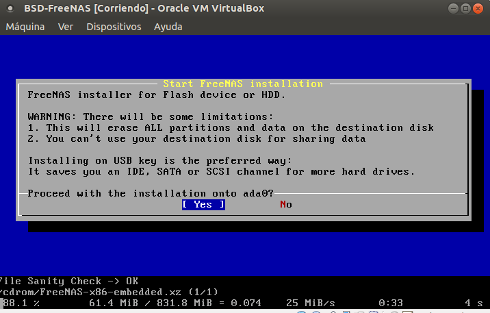
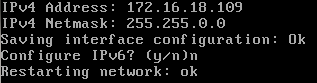
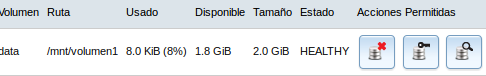
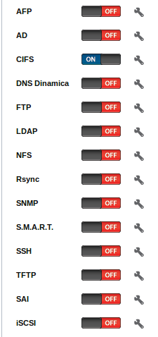
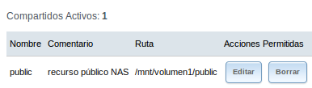

- Módulo: FUW
- Título del trabajo Almacenamiento NAS
- Componentes del grupo: Güinel Rodríguez García.
- Curso Académico: 2013/2014
- Fecha de entrega: 29 de abril de 2014
-En primer lugar preparamos la MV para la ISO del FreeNAS.
-Luego instalamos la ISO.
-Comenzamos a configurar algunos parámetros.

-Vamos a realizar la configuración inicial.

-Creamos un volumen en el entorno gráfico.

-Activar el servicio de carpetas compartidas.

-Creamos un recurso compartido.
